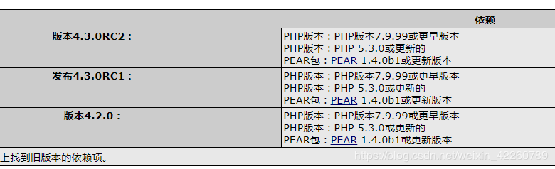
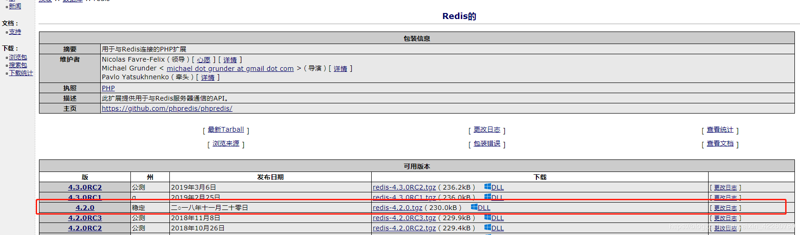
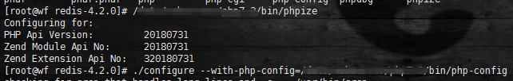
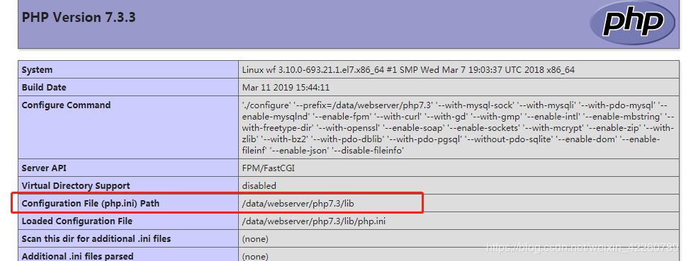
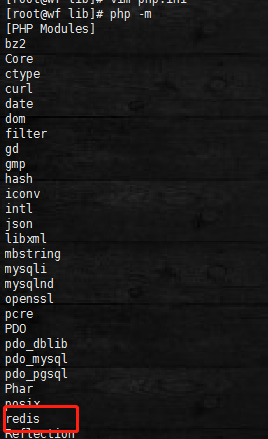

http://pecl.php.net/package/redis


稳定版吧：
[root@wf ~]# wget http://pecl.php.net/get/redis-4.2.0.tgz
[root@wf ~]# tar -zxvf redis-4.2.0.tgz
//到源码目录
[root@wf redis-4.2.0]# **你自己的php目录下**/bin/phpize
[root@wf redis-4.2.0]# ./configure --with-php-config= **你自己的php目录下**/bin/php-config
make
make install
修改php.ini文件：
添加extension=redis.so
一开始我的没用生效，后来发现php.ini位置错了，我是自定义的安装目录
可以看phpinfo();

然后我把php.ini放到这个目录下
[root@wf lib]# php -m
OK!
Ps:此时redis装好无疑，如果需要连接远程需要redis服务开放端口以及密码等。。。（猛敲黑板！！！）